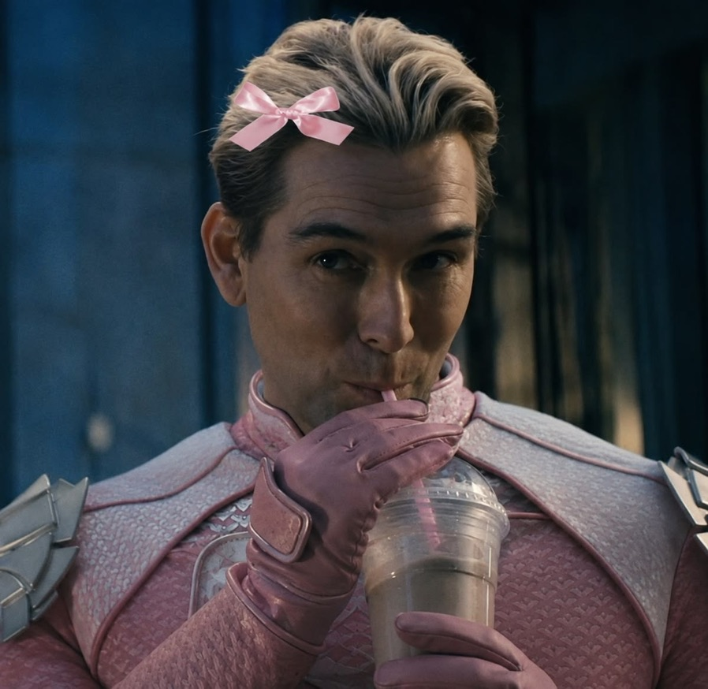
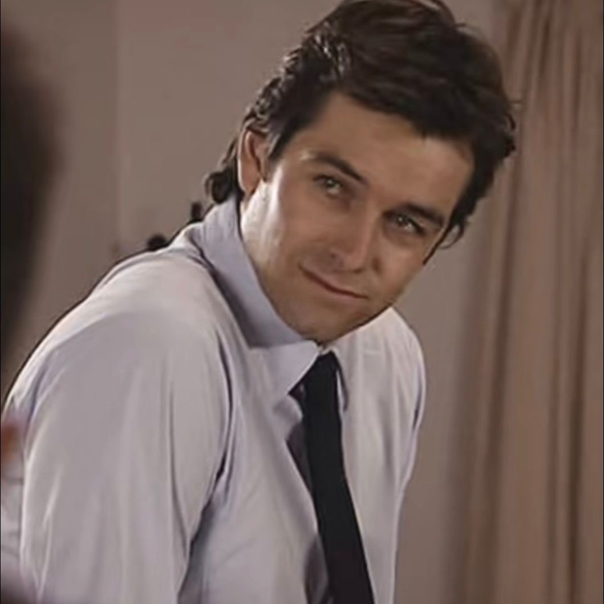
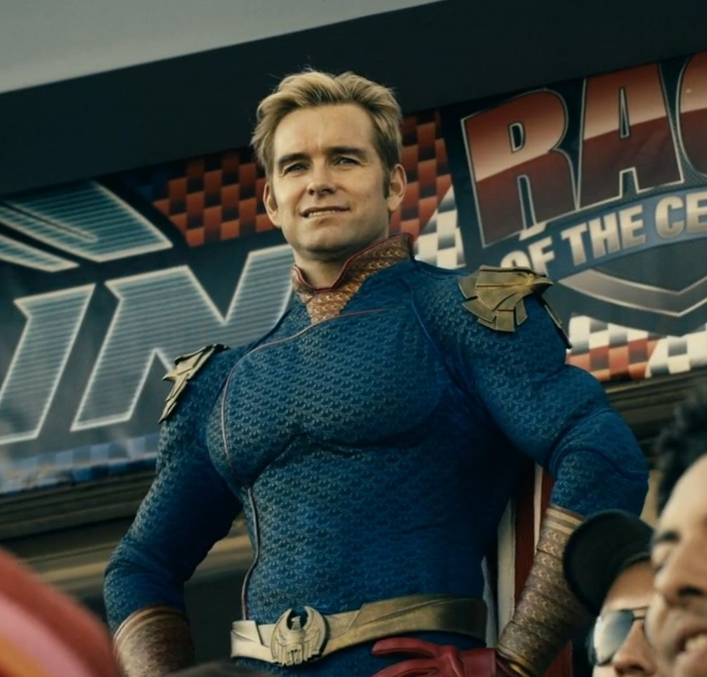
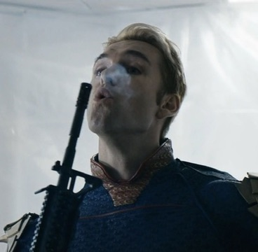
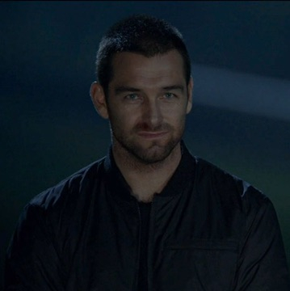
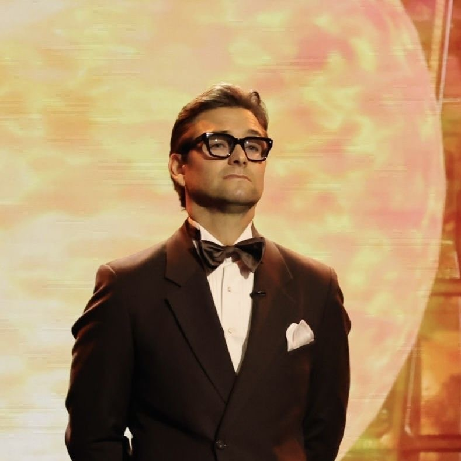
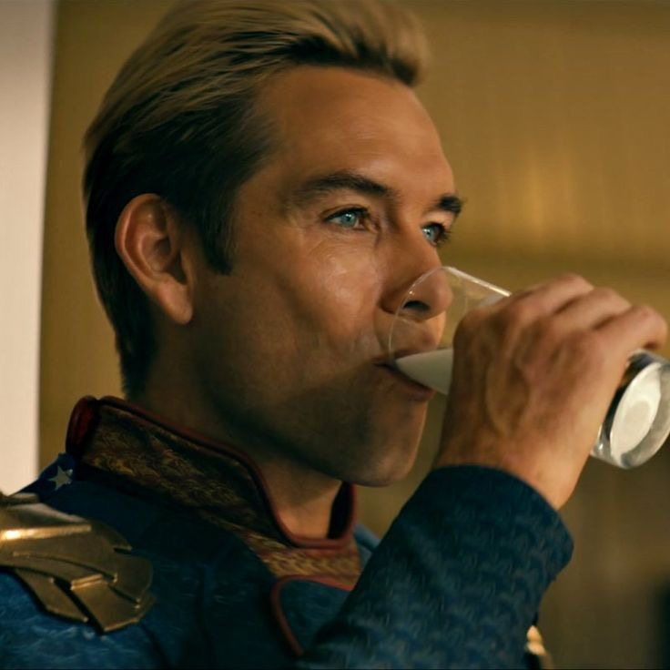
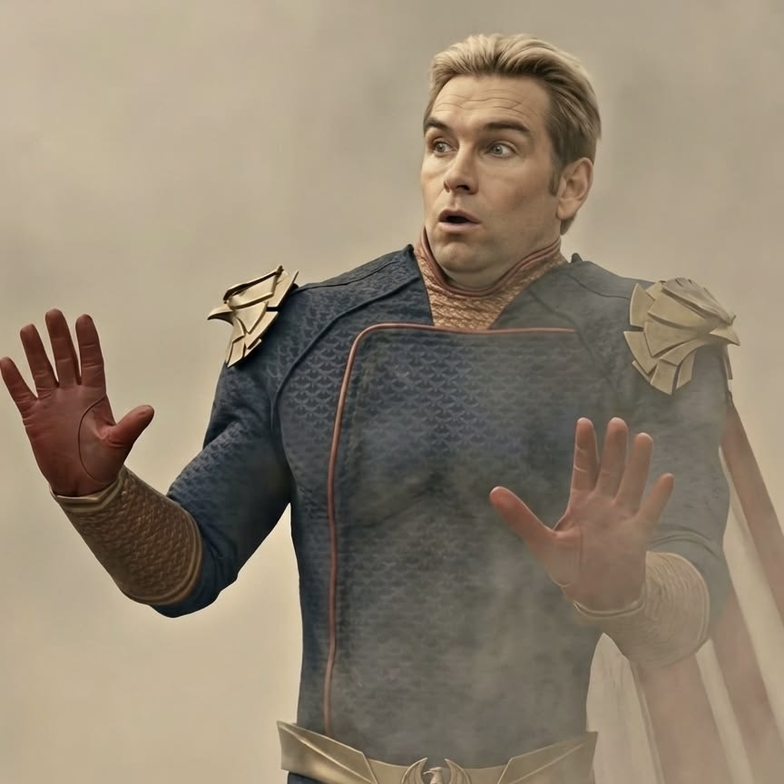

| Film / Series | Role | Year |
|---|---|---|
| The Boys | Homelander | 2019 |
| Banshee | Lucas Hood | 2013 |
| Outrageous Fortune | Van and Jethro West | 2005 |
Best Performances

The Boys
Antony Starr plays Homelander, the powerful and dangerous leader of The Seven.
Banshee
Starr plays an ex-convict who takes the identity of sheriff Lucas Hood in the town of Banshee.

Outrageous Fortune
Antony Starr plays twin brothers Van and Jethro West in this New Zealand television series.
Photo Gallery





